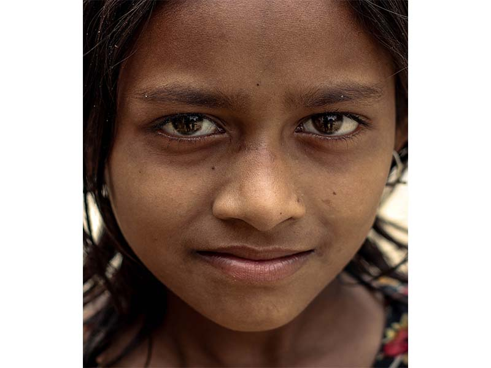

Son aquellos organismos complejos que están formados por una o más células y que tienen la capacidad de desempeñar las funciones básicas de la vida.
Es la respuesta o reacción de los seres vivos a estímulos de sus ambientes interno o externo. Por ejemplo los animales: a través de los órganos de los sentidos, perciben los estímulos externos y los internos a través de receptores de temperatura, dolor, estiramiento.
Capacidad de los seres vivos para reacondicionarse o los factores del medio. Es progresiva y se manifiesta mediante cambios en sus estructuras , tamaños, colores, comportamientos.
Es el proceso biológico por medio del cual los seres vivos forman nuevos individuos semejantes a ellos, que además de continuar su especie, remplazan a los que van desapareciendo.
Es la que se produce con la participación de gametos femenino y masculino, y que al unirse mediante la fecundación originan un huevo o cigoto.
Es la que se lleva a cabo sin la participación de gametos o células reproductoras. Es la que emplean los organismos menos evolucionados como las bacterias o los protozoarios.
Es el conjunto de procesos mediante los seres vivos transforman y aprovechan la materia y energía , para realizar sus funciones. Estas reacciones químicas son reguladas por las enzimas ( catalizadores químicos). Hay dos tipos de metabolismo:
Es el proceso por el cual las sustancias mas simples se convierten en otras mas complejas. Va de menos a mas. ( Sintetiza sustancias y utilizan energía). Ejemplo: La síntesis de carbohidratos, lípidos, proteínas, que a su vez forman células y tejidos y que ayudan a crecer.
Es el proceso que transforma sustancias mas complejas en sustancias mas simples. Va de mas a menos. ( Degrada sustancias y liberan energía) Por ejemplo: En la digestión, los alimentos se degradan en compuestos sencillos como azucares simples, aminoácidos o ácidos grasos).
Es cuando los seres vivos aumentan progresivamente de tamaño hasta alcanzar los límites característicos de su especie, gracias a la utilización de los nutrientes adquiridos de sus alimentos.
Es la capacidad de los seres vivos de mantener el equilibrio biológico de su interior , por medio de sus mecanismos homeostáticos, en forma independiente de las variantes externas e internas. Por ejemplo: Regular el calor de nuestro cuerpo, cuando hace calor el cuerpo suda, cuando hace frío el cuerpo metaboliza mas alimentos.
{kind=link}